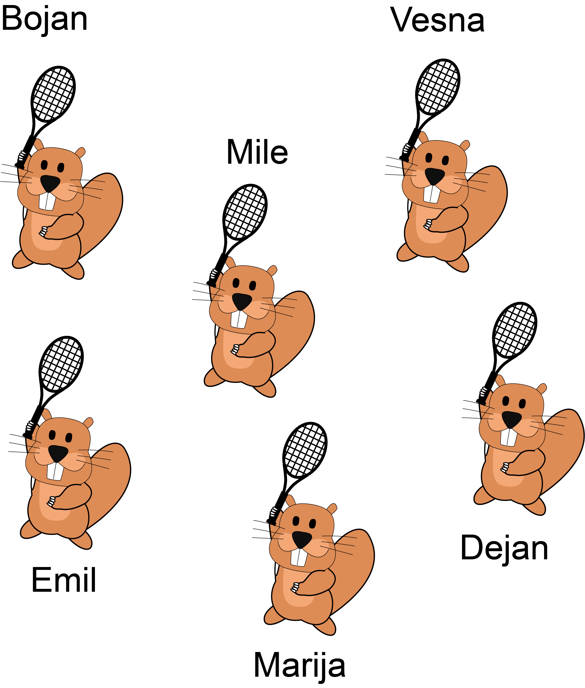

網球賽
有六隻海狸（Bojan, Vesna, Mile, Emil, Dejan, 和 Marija ）參加了海狸杯網球賽，在賽程安排完後，主辦單位遇到了一個棘手的狀況：雖然主辦單位會提供選手球拍，但每位選手在自己的比賽中都想用固定的球拍，可是在經費有限的情況下，無法支付每位選手一隻球拍。幸好比賽場地只有一個，不會有兩場比賽同時進行，所以只要妥善分配球拍，是可以用少於六隻球拍來完成所有比賽的。賽程編排順序如下：
| Bojan | vs | Emil |  |
| Emil | vs | Mile | |
| Mile | vs | Vesna | |
| Vesna | vs | Bojan | |
| Dejan | vs | Vesna | |
| Dejan | vs | Mile | |
| Marija | vs | Emil | |
| Bojan | vs | Mile |
在比賽期間主辦單位最少需要準備幾支球拍提供給六位參賽者呢？